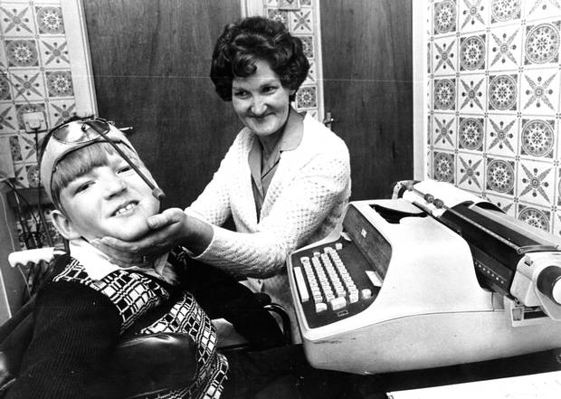
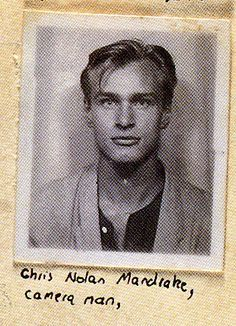
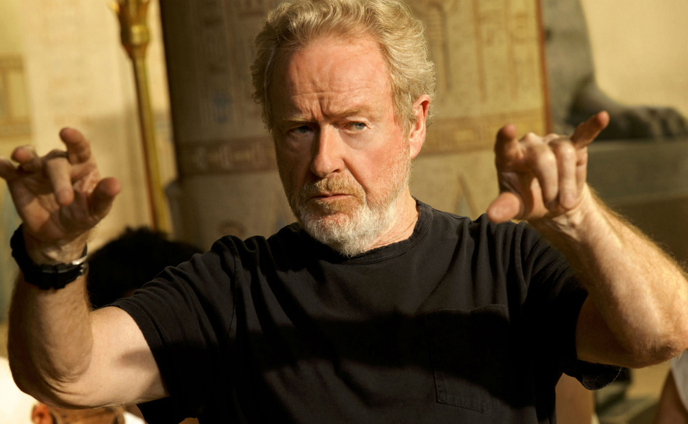

크리스토퍼 놀란을 아시나요? 저는 한국이 사랑한 감독,크리스토퍼 놀란을 소개하려고 합니다.
1. 어린시절

놀란은 1970년 7월 30일, 영국인 광고 카피라이터인 아버지 브렌던 놀란과 미국인 항공 승무원 어머니 크리스티나 사이에서 태어나 영국과 미국을 오가며 지냈다.아버지는 카피라이터 출신으로 매우 창의적인 사람이었고 놀란이 일곱 살 무렵 영화를 만들고 싶어 하자 당시 고가의 장비였던 슈퍼8카메라를 빌려주셨다.물론 놀란이 카메라를 차 밑바닥에 테이프로 붙여 산산조각냈지만 그의 아버지는 언제나 놀란을 창의적인 방법으로 도왔다.
2. 학창시절

영국의 런던 대학에서 영문학을 전공했다.놀란이 런던 대학을 진학하게 된 가장 큰 이유는 학교 안에 영화 편집 시설을 갖추고 있었기 때문이다. 그리고 학내 영화제작 동아리의 회장을 역임하기도 하였다. 7살 때 영화를 찍기 시작해서는 19살 때 찍은 영화 2편 - 8mm 초현실주의 단편영화 《타란텔라》와 단편영화 《도둑질》이 케임브리지 영화제에서 상영되었다.
3. 감독이 된 계기

그가 처음으로 영화를 제작하기 시작한 나이는 7살이다. 그는 미국 교외의 한 극장에서 '스타워즈'를 보았다. 그 때 아주 신선한 충격을 받은 그는 여전히 그 때의 기억을 생생하게 그려낸다.그 후, 그는 그의 아버지와 극장에 가서 다시 '스타워즈'를 보고, '2001 스페이스 오딧세이'등을 보며 영화에 대한 관심을 가지게 되었다.또한 어렸을 적 리들리 스콧
감독의 영화<블레이드 러너>와 <에이리언>을 보며 감독의 역할이 무엇인지 생각하게 되었다고 밝혔다. <블레이드 러너>는 셀 수도 없이 봤으며 거의 집착 수준으로 리들리 스콧을 좋아하고 존경하는 광이었다.